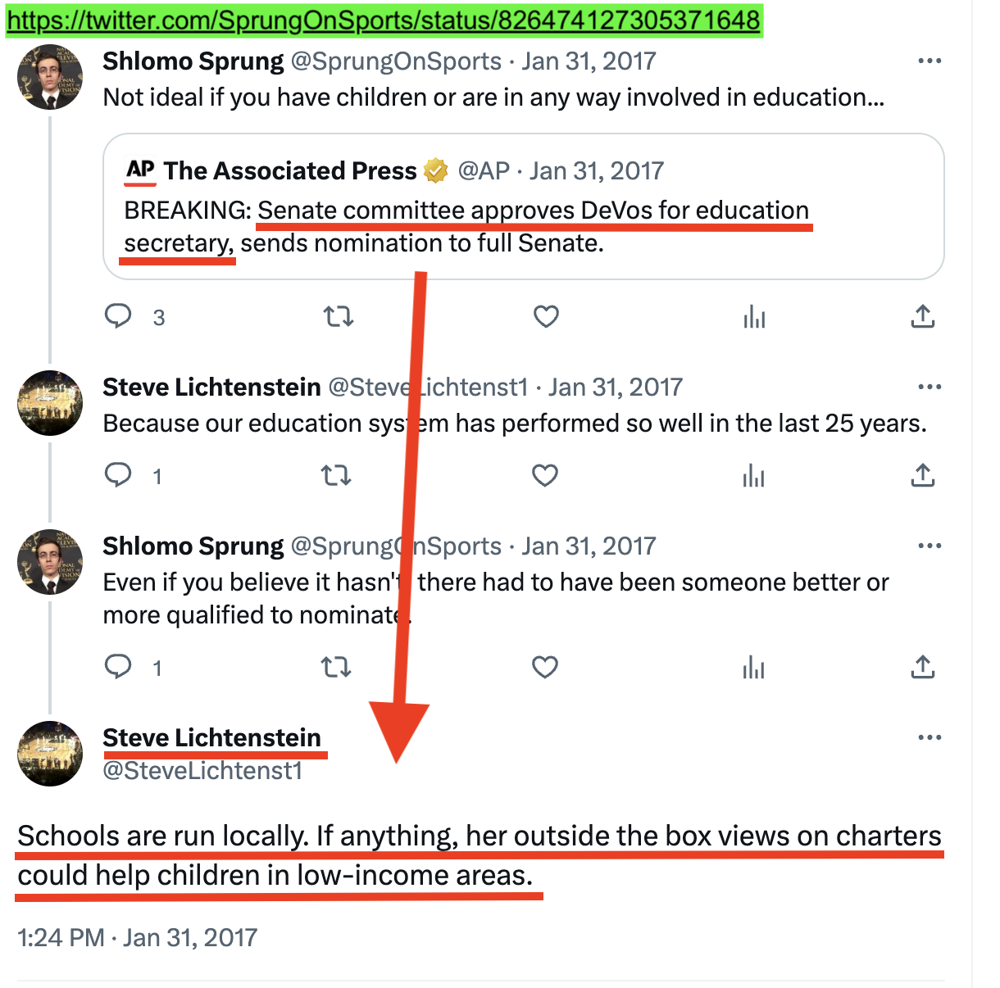

On January 31, 2017, Steve Lichtenstein, who serves as Campaign Treasurer for Campaign to Elect Dana Drug,
posted in a thread on Twitter:
"Schools are run locally. If anything, her [DeVos's] outside the box views on charters could help children in low-income areas."
Prior posts in the thread:
POST: https://twitter.com/SprungOnSports/status/826474127305371648
[Jan. 31, 2017 @ 11:56am] @SprungOnSports (Shlomo Sprung)
In response to AP article announcing approval of Betsy DeVos to head Dept. of Education
"Not ideal if you have children or are in any way involved in education..."
REPLY: https://twitter.com/SteveLichtenst1/status/826496281136791552
[Jan. 31, 2017 @ 1:24pm] @SteveLichtenst1 (Steve Lichtenstein)
"Schools are run locally. If anything, her outside the box views on charters could help children in low-income areas."
Screenshot of above thread:

NOTE: This web page is not affiliated with any public official or candidate in the Township of West Windsor, NJ, nor with Donald J. Trump.